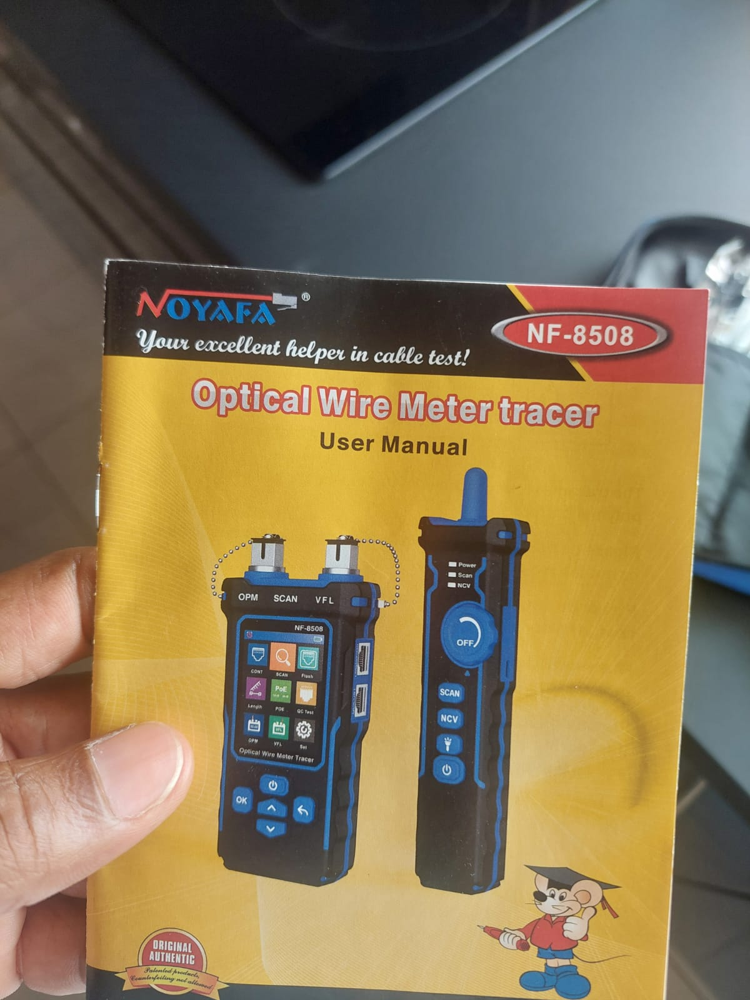
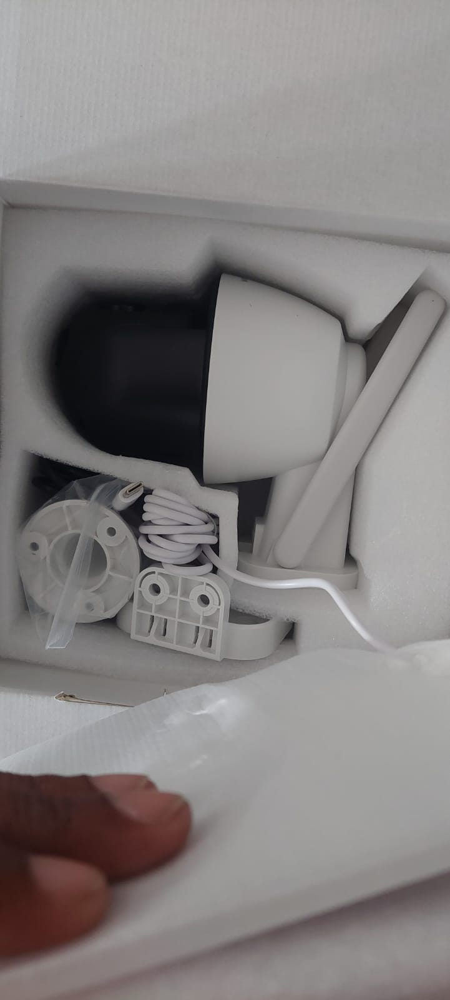
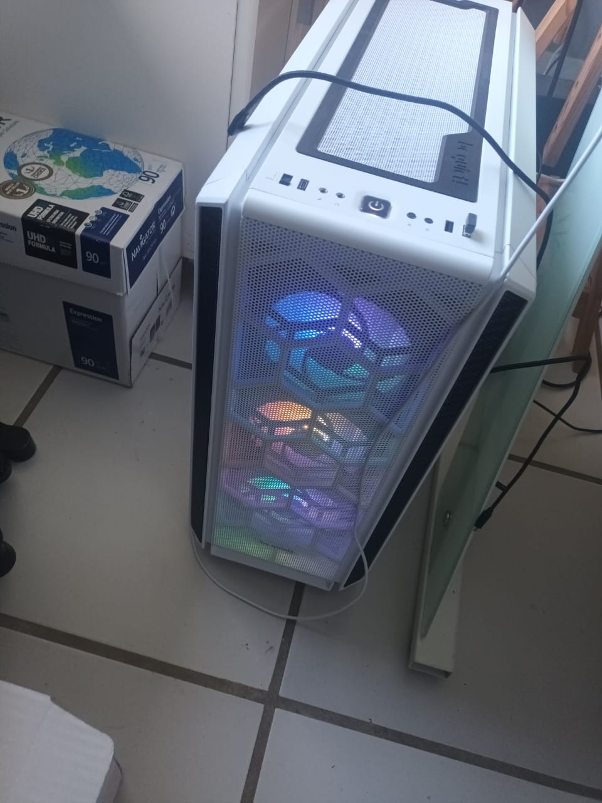
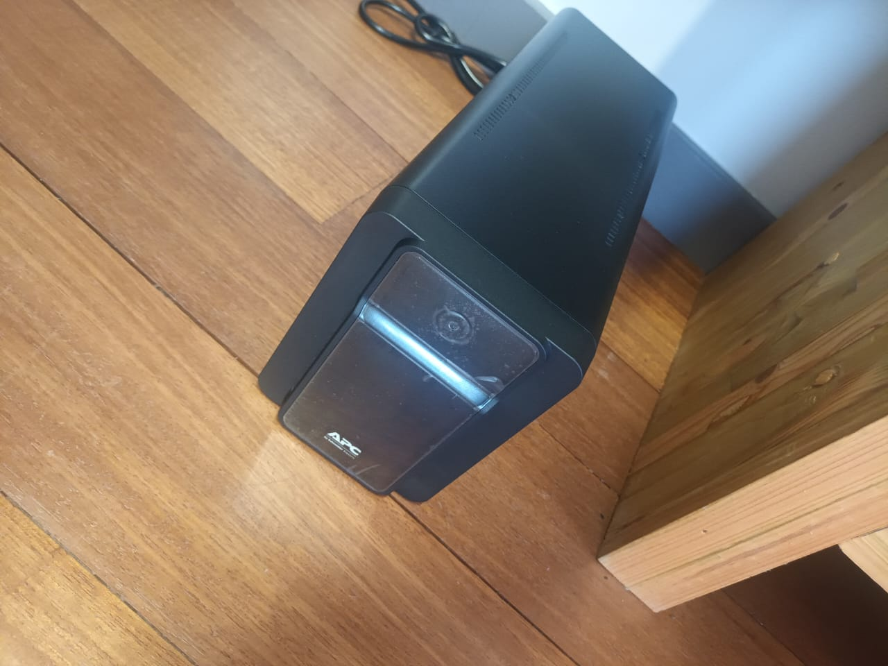

During my internship at Atouklic, I worked as a field IT technician providing on-site support to home users and small businesses. This professional immersion allowed me to apply my theoretical knowledge to real-world situations while developing essential technical and interpersonal skills.
Summary of Key Activities
Troubleshooting: Diagnosing and repairing hardware/software issues
Networking: Installing and configuring network infrastructure (including Starlink)
User Support: Resolving common issues (printers, email, cloud services)
Maintenance: System updates and hardware repairs
Consulting: Recommending solutions tailored to client needs and budgets
Troubleshooting and Problem Resolution
The core of my work involved identifying and solving various technical issues. Each service call began with carefully listening to the client's description of the problem, followed by systematic testing.
Systematic Approach
For computer issues, I followed this methodology:
Hardware component check (hard drive, RAM, power supply)
Software diagnosis (OS, drivers)
Virus/malware scan
Stability testing after repair

Common Issues
Certain problems occurred frequently:
Printer Problems
Most issues involved network connectivity. After checking physical connections (Ethernet or Wi-Fi), I would:
Reinstall drivers
Configure static IP to prevent conflicts
Verify sharing settings
Email Configuration
Common challenges included:
Incorrect protocol settings (IMAP/POP/SMTP)
Authentication problems
Inappropriate synchronization settings
Network Installation and Configuration
This was the most rewarding part of my internship, allowing me to work on diverse network infrastructures.
I worked on EZVIZ surveillance systems, installing and configuring:
Wi-Fi and wired surveillance cameras
Connected video doorbells
Cloud storage and remote access via the EZVIZ app

Updates and Hardware Maintenance
BIOS Update (MSI Example)
Downloaded and verified the correct BIOS version
Created a bootable USB drive in UEFI mode
Backed up settings before updating
Performed post-installation tests to verify system stability

UPS Installation
Installed and configured UPS devices to protect critical equipment
Performed power failure tests to validate autonomy and protection

Conclusion and Perspectives
This professional immersion was crucial for my training.
Technical Skills
Mastery of network diagnostic tools
Ability to configure complex equipment
End-to-end service call management
Personal Development
Improved communication with non-technical clients
Stress management when facing complex problems
Independent scheduling and organization
I conclude this internship with genuine professional satisfaction and confirmation of my career path toward becoming a network technician. The skills I acquired will be invaluable for my future.